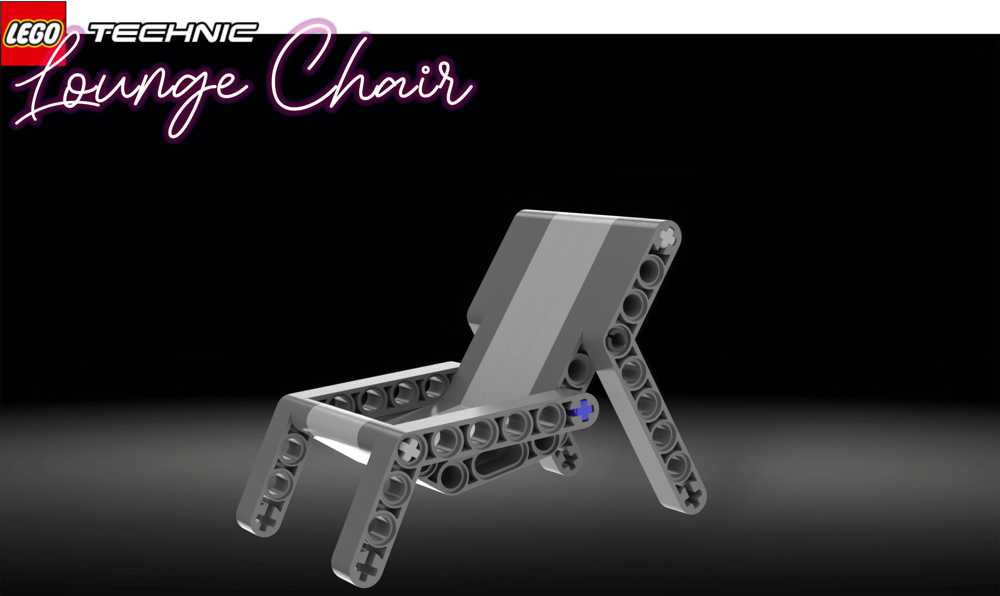
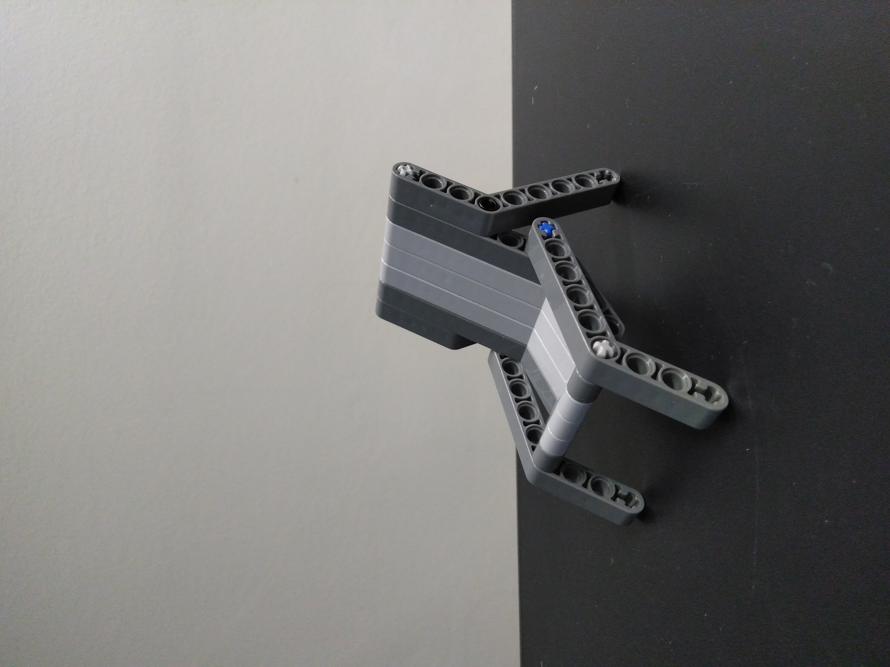
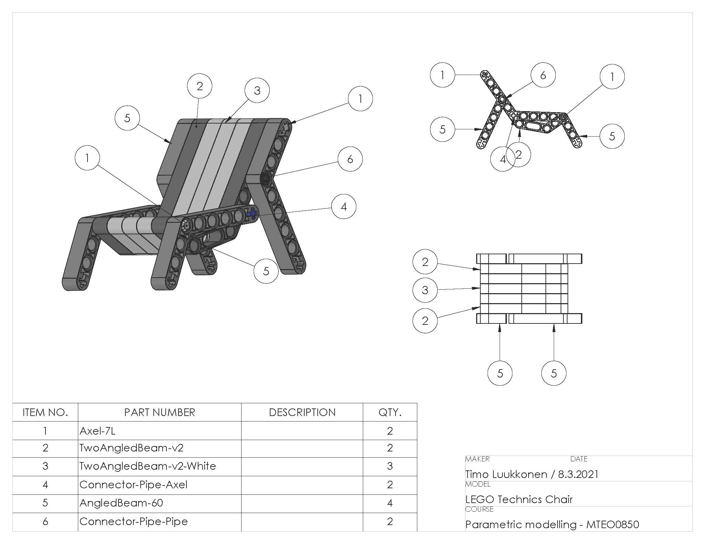
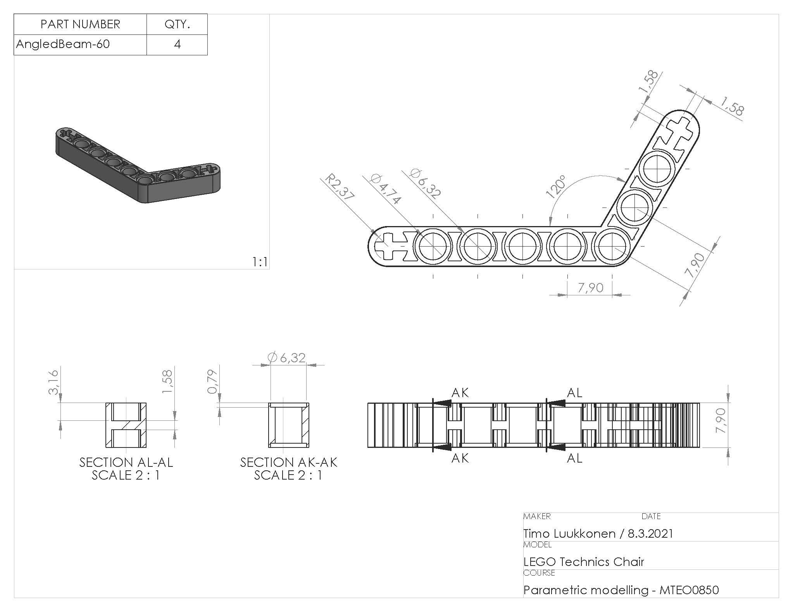

Lego Technic Lounge Chair

An excercise in parametric modeling on Solidworks.
The task was to create a simple Lego parts, and create an assembly with the proper documentation about the project. I wanted to add a little bit of challenge to the project, and decided to do the project using Lego Technics parts.
I started with creating the actual item from Lego parts, and then reverse-engineer that in Solidworks. The task turned out to be a bit more challenging than I first thought, because of the tight tolerances and hard-to-find information about the correct measurements. This ended up in multiple re-modelings of certain parts, but in the end the finished product got successfully made.


